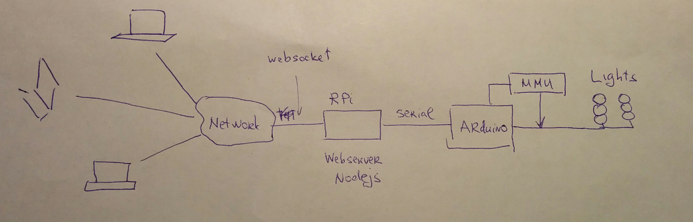
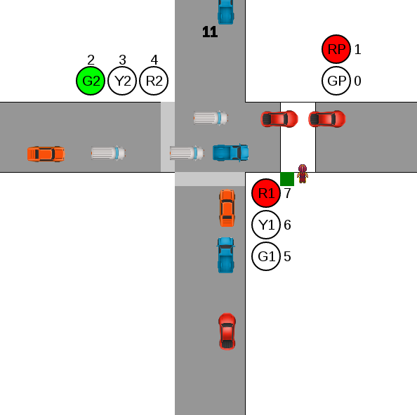

In the heart of Traffic Light system is Arduino microcontroller that sends signals to lights according to internal program. To protect Traffic Lights from hardware or software failures there is a special module called MMU (Malfunction Management Unit) that independently checks that program is running correctly. In this particular case MMU is realized as a software function, in real Traffic Lights it is usually an independent hardware module.
Modern Traffic Lights have to communicate between each other, as well as with some Traffic Control Center. This way you can adjust traffic light sequences according to the current situation with traffic. In this case Arduino controller communicates with small web server, which runs on Raspberry Pi. The data between RPi and Arduino goes over serial port.
Connection to Web server is done over ordinary TCP/IP network. In this case data is send over modern WebSockets protocol, which unites comfort of ordinary HTTP protocol with real time capabilities of asyncronous communications. Unlike ordinary HTTP you do not have to constantly reload webpage to find new information, instead small data packets with information about Traffic Lights state come from server to client asyncronously.
Lately it is quite usual to send information using so called JSON format. This format is almost self-explanatory. We use this format to communicate with Arduino controller.
{info:1} - report the state of the Traffic Light controller
{button:1} - to send a signal that pedestrains button was pressed
{username:operator, password:guess} - to send name and password to controller
{reset:1} - reset traffic if it entered in malfunction state (blinking yellow)
{set:1, state:2, delay:3000} - set delay in state 2 to 3000ms
{turnON:3} - turn ON Light 3 for short period of time (till next sequence)
{turnON:3, turnOFF:5} - turn ON Light 3 and turn OFF Light 5 for short period of time
--- sysadmin only ---
{guard:0} - turn OFF MMU (Malfunction Management Unit)
{guard:1} - turn ON MMU (Malfunction Management Unit)
{set:1, state:2, pattern:50} - set pattern in state 2 to 50 (see next section)
Traffic Light from programming point of view is almost an ideal State Machine. There are several states between which Traffic Lights switches while it operates. Let us consider Traffic lights system in very simple case of 2 one-way crossing.

| State No. |
Lights Label and bit | Binary form | Decimal | Delay (ms) |
Next state | Action and Comment | |||||||
|---|---|---|---|---|---|---|---|---|---|---|---|---|---|
| 7 | 6 | 5 | 4 | 3 | 2 | 1 | 0 | ||||||
| 0 | R1 | Y1 | G1 | R2 | Y2 | G2 | RP | GP | 10000110 | 134 | 4000 | 1 | Road 1 is closed, Road 2 is opened. Pedestrains stay. |
| 1 | R1 | Y1 | G1 | R2 | Y2 | G2 | RP | GP | 01001010 | 74 | 1000 | 2 | Road 1 is closed, Road 2 is closed. Warning. Pedestrains stay. |
| 2 | R1 | Y1 | G1 | R2 | Y2 | G2 | RP | GP | 00110010 | 50 | 4000 | 3 | Road 1 is opened, Road 2 is closed, pedestrains stay. |
| 3 | R1 | Y1 | G1 | R2 | Y2 | G2 | RP | GP | 01001010 | 74 | 1000 | 0 or 4(button) | Road are closed. Check button for pedestrains |
| 4 | R1 | Y1 | G1 | R2 | Y2 | G2 | RP | GP | 10010010 | 146 | 500 | 5 | Close both roads |
| 5 | R1 | Y1 | G1 | R2 | Y2 | G2 | RP | GP | 10010001 | 145 | 3000 | 6 | Close both roads. Let pedestrains in. |
| 6 | R1 | Y1 | G1 | R2 | Y2 | G2 | RP | GP | 10010010 | 146 | 1500 | 0 | Close both roads. Give some time for pedestrains to walk away |